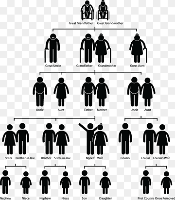

The "normal" family dynamic mainly follows the structure of a basic family tree. With the higher(older) you are on the tree the more authority
you have. Then the dynamci is as you get older you not only learn from school but also the authority figures in your life. Now when a child can do most
of their learning in the palm of their hands, on their own time, the need for the teaching from the older generation is not needed as much.
This is where the family dynamic gets messed up. If someone in a younger generation can look up anything at anytime, the older generation who
would teach them eventually will not need too, making them lose some power they had over their children.
Authority is power, so when parents and the authority figures in families have a loose knownledge on technology and the younger
generations have an expert knownledge on it parents lose power. Especially when technology allows almost infinite access to information
so children can become more distant because they do not need their parent as much, even if they do it unintentionally.